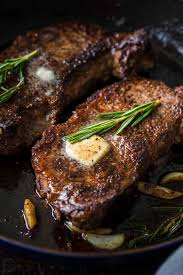
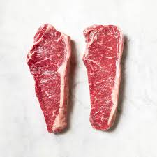

Home
Pan Seared Steak

Description
This Pan-Seared Steak has a garlic rosemary-infused butter that makes it taste steakhouse quality.
You will be impressed at how easy it is to make the perfect steak seared and caramelized on the outside, and so juicy inside.
Ingredients
It really cannot get any easier than this and you do not need much to make a lip-smacking good steak. We used 2 New York Strip Steaks (pictured below), each weighing 1 pound and 1 1/4″ thick.
Keep in mind a thicker steak will take longer to cook through and a thinner steak will cook faster.

- Steak
- Salt and Pepper
- Butter
- Olive Oil
- Garlic cloves
- Rosemary sprigs
Steps
- Pat dry: use paper towels to pat the steaks dry to get a perfect sear and reduce oil splatter.
- Season generously: just before cooking steaks, sprinkle both sides liberally with salt and pepper.
- Preheat the panon medium and brush with oil. Using just 1/2 Tbsp oil reduces splatter.
- Sear steaks: add steaks and sear each side 3-4 minutes until a brown crust has formed then use tongs to turn steaks on their sides and sear edges (1 min per edge).
- Add butter and aromatics: melt in butter with quartered garlic cloves and rosemary sprigs. Tilt pan to spoon garlic butter over steaks and cook to your desired doneness (see chart below).
- Remove steakand rest 10 minutes before slicing against the grain.